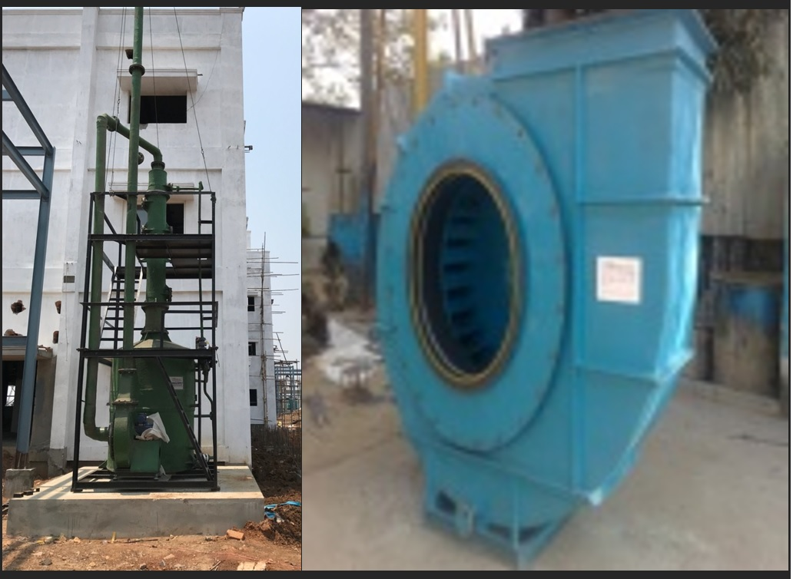
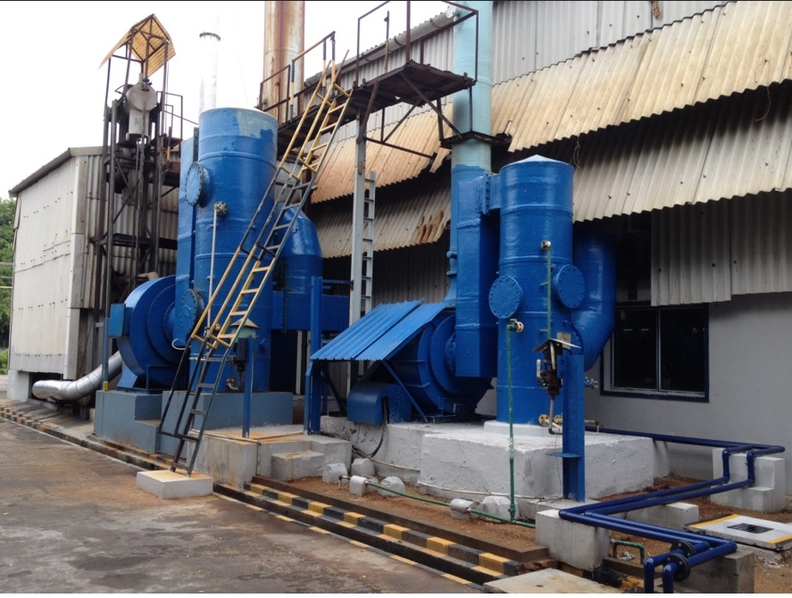
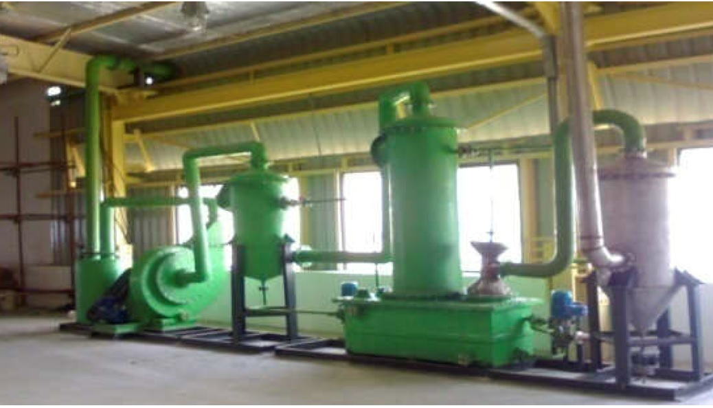

Executed Projects

Real time - Implemented data analytics and manufacturing projects
1. Prediction of the Impellor unbalancing in Centrifugal blowers.
Purpose: To predict the impellor unbalancing and failure of bearings in a centrifugal blower, a test run of 2 hours is conducted to decide if the impellor needs to be balanced again. If the failure prevails even after two sets of impellors re-balancing the design of the blower should be revised and minor engineering fabrication changes should be done. This helps to prevent any future shutdowns thereby keeping the production line functioning non-stop.
lective Extensive study on computer vision and Reinforcement learning.

Plan and action:
• Data Collection, segmentation and entire sample pre-processing.
• Performed the EDA and drawn the insights through the data.
• Application of machine learning algorithms and Model building
• Performance analysis of Models and fine tuning of models by using the hyperparameters
• Cross verified the prediction of the model against the actual condition of the impellor after the test
2. Automatic turbulence creator in Packing column.
Purpose : The severely chocked packing material mainly consisting of pall rings needs timely maintenance in fume scrubbing columns where toxic gases are neutralized using a liquid in counter current action. After a period of time the packing columns of pall rings get severely blocked due to the constant thrust of fumes inside the system thereby making the scrubbing system far less efficient.

Plan and action:
• Data Collection, segmentation and entire sample pre-processing.
• Visualization tools such as tableau were used in convincing the customers the effectiveness and economic plan was made predicting the amount of capital and human labor which can be saved by automatic turbulence creator.
• Anemometers and respective detection sensors before and after the packing columns were installed to check the input and output gas volume and velocity.
• When the gas volume and velocity is observed less than the design specification the sensor triggers a 5HP water jet pump which splashes water on the chocked pall rings causing turbulence thereby releasing any held up fume and sludge materials.
• System back to normal and the smooth production continues until any other such obstructions occurs.
• Entire event is documented and the data is automatically collected for further process improvement.
• Automatic SMS alert is sent to all plant managers of each and every occurrence till the production efficiency is back to normal.

3. Inventory Management of the consumables in the production shed stores.
Purpose: To predict and to satisfy the timely demand of the items in the production line, which helped in taking the decision and buy the materials and keep them in stock to maintain the corresponding inventory of items.
Plan and action:
• Data collection, Data pre-processing.
• Exploratory Data Analysis, feature Selection.
• Model building
• Performance Analysis